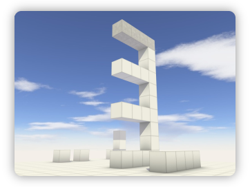

Hexahedron and this page are open source, and built using open source tools and resources, including those listed below:
Links
Hexahedron Project Page
jMonkeyEngine
Blender
Gimp
LWJGL
Open Source Web Design
Axis Creations (basis for CSS)
The Hexahedron Game Engine
Hexahedron is a Java
game engine based on the jMonkeyEngine
graphics engine.
In hexahedron, the world consists of only cubes (hexahedra).
This allows for complete implementations of everything required
for a game (lighting, physics, AI, level editing etc.), with much less
code and effort both within the engine and in games using it. The cube
system may be simple, but it still gives full scope for complex level designs
in a variety of game types.

More complex screenshot
{kind=link}
{kind=link}
Current Status
Hexahedron is currently in early development, so to try it you will need to get the code from SVN on the project page, but already some key features are implemented:
- Static world made of cubes. Uses an octree for efficient drawing
- Perfectly accurate dynamic ambient occlusion lighting of cubes
- Perfectly accurate dynamic directional (sun) lighting of cubes
- Swept collision detection between moving cuboids (e.g. players, objects) and the world. This is both integer accurate (allowing for perfect sliding "logic" in puzzle games) and fast. Since the detection is swept, it is impossible for objects to move "through" the world, even when moving at high speed.
- Basic "FPS" physics, allowing for moving cuboids (e.g. players) to slide along walls, fall, jump etc. This will be extended to more complex physics like friction, bouncing, etc.
There is a simple demonstration of these features in the form of an FPS-style game where the player can walk and jump through a level.
Development
Development is currently concentrating on making a playable game, where the player must run and jump through a series of obstacles. This is designed to test and demonstrate the engine, but should hopefully also be an enjoyable game in itself. Additional features required to implement this system include:
- Improved player handling such as crouching, better jumping control, and perhaps jumping to ledges, etc.
- Collision detection between moving objects - for example obstacles like spikes and blades colliding with the player.
- Simple entity/property system for player and obstacle properties like health, damage amounts, etc.
- Annotation system to give properties to cubes and cube faces, for example to make bouncy faces, points that can be grabbed onto, etc.
Resources
The graphical and other resources (and soon also the original blender and gimp files) for the
game, and this page, are available under a Creative Commons licence:
Hexahedron Resources
by
Hexahedron
is licensed under a
Creative Commons Attribution-Non-Commercial-Share Alike 3.0 Unported License
.
Software Patents
Software Patents are a threat to Hexahedron and many other far more important open source projects, as well as to basic freedoms. Apathy will let this kind of thing succeed against reason and popular feeling - you can find out how to help at the FFII page.